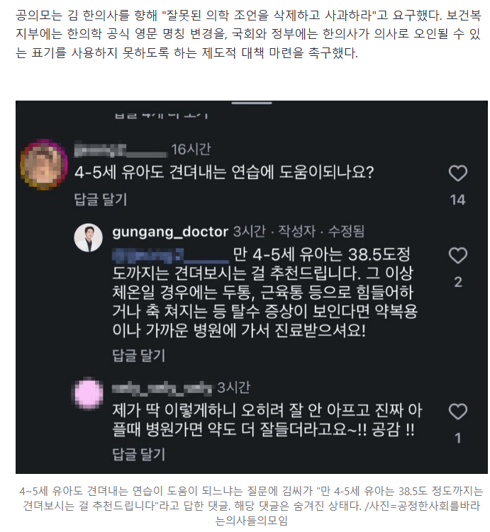
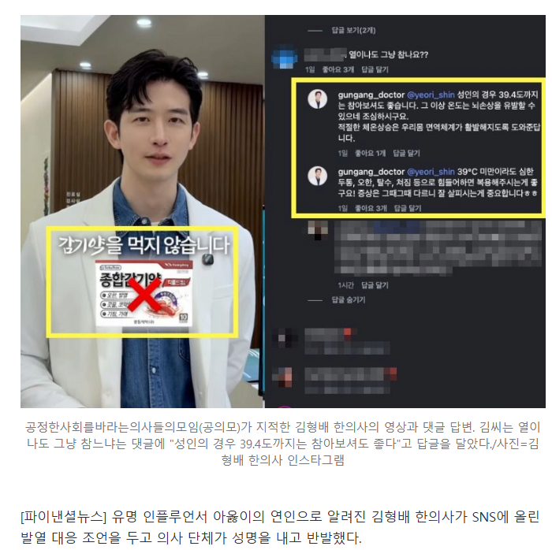

https://n.news.naver.com/mnews/article/014/0005566653?sid=102
금강불괴 수련법인가..


https://n.news.naver.com/mnews/article/014/0005566653?sid=102
금강불괴 수련법인가..
감염성 발열이 사이토카인에 의해 조절된다는 건 맞지만, 그게 무조건 안전하다는 뜻은 아님ㅋㅋ 사이토카인이라는 의학용어 하나 가져와서 병원 갈 필요 없다고 단정하면 그건 의학적 설명이 아니라 위험한 과잉해석임. sns에 글 올릴땐 조심해야함.
최근에 열이 40도가 넘은적 있었는데 요단강 건널뻔했다. 39도만 넘어도 나 죽는건가 싶을정도로 아프던데 뭐 버텨.....?
나 주사 극혐하는데 몇년전에 감기 걸렸을 때 진짜 이대로 있다간 죽겠다 싶어서 주사 맞고 싶은 생각밖에 안 들더라.
정신도 없어서 집 앞 정형외과 갔더니 감기가 아니라 독감이었고 40도쯤 나왔음.
한의사 ㅋㅋㅋ
주장은 가능한데 근거가 뭔지..
이에 관련된 논문 있나? 궁금하네
이게 같은 의사라는 표현을 쓰면 안돼
38찍으면 얌전히처먹으면댐 39다? 응급실가도뭐라안함
나도 고딩때 남는원서 그냥 한의대 써서 붙었는데 도저히 못가겠더라...
안아키여?
장애인 되지않나 ㄷㄷㄷ
저 온도 찍어봤는데 응급실 2번감
장염 ㅅㅂ
39도에 응급실 가본적은 있음.. 운전은 되더라
의사말은 그래도 좀 들어라